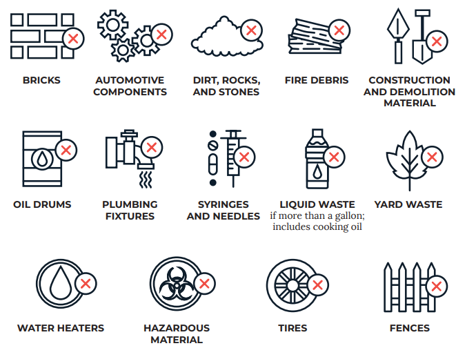

Table of Contents
- What is Trash?
- How do we dispose of non-regular Trash?
- How do we prepare our Trash for disposal?
- When do we throw away our Trash?
- What happens if I have violated the code?
1. What is Trash?
Trash refers to unwanted, discarded or waste material that cannot be reused, repurposed or recycled.
To support the City of Boston's dedication to reducing our waste, we encourage you to manage your waste responsibly by minimizing the amount of trash you dispose of.
Before you throw away something in the trash, use our Reycling and Trash Directory to check if it can be recycled, reused, or donated.
You can also use the Waste Sorting Tool on the Trash Day App to do this. You can find the App on Google Play or App Store.
2. How do we dispose of non-regular Trash?
- (Items Eligible for Special Pickup) Certain items cannot be put in the regular trash or be recylced. Instead, they need to be scheduled for a Special Pickup. To schedule a Special Pickup:
- (Items to be Collected by Private Hauler) Furthermore, the City of Boston does not collect items such as construction debris, automative parts, plumbing fixtures, fences, water heaters, or fire debris. Hire a private company to collect them.

Zero Waste Days
The City of Boston holds drop-off days to collect household hazardous materials and certain waste ban items on Zero Waste Days.
To dispose of such items, you need to provide a photo ID, utility bill, or lease as proof of residency.
Also, we do not accept waste from businesses and reserve the right to reject any materials that do not meet our regulations.
Please view the 2025 Schedule of Drop-off Events and list of Accepted Materials on our website.
3. How do we prepare our Trash for disposal?
- Residents are responsible for purchasing their own containers and replacing damaged containers.
Barrels or containers should meet the following requirements:
- be metal or made of durable plastic
- have a lid
- not be larger than 32 gallons (unless it can attach to a lifting mechanism, then it can be up to 96 gallons)
- not weigh more than 50 pounds
- If you use trash bags, they must be 2ply or .9 millimeter or greater plastic material and can't be larger than 32 gallons.
Remember!
- Placing trash in kitchen bags, grocery bags, paper bags, cartons or boxes is not acceptable, and might result in a code violation.
- Having an overflowing barrel or unkempt trash can also result in a code enforcement violation.
4. When do we throw away our Trash?
Not sure when to throw away your trash? Search the collection schedule by entering your address at our Reycling and Trash Directory.
Trash must be placed at the curb by 6 a.m., or after 5 p.m. the night before your scheduled trash day.
5. What happens if I have violated the code?
If you don't comply with our regulations, you may receive a ticket from our Code Enforcement Division. You can also report offenses at Boston 311 .
Appealing a Code Violation
You may appeal a code violation, by completing this form. You may choose to make an appeal online or request an in-person hearing.
Paying Fine for Code Violation
To pay the fine for a code violation, you can choose from the following options:
- Making your payment online by searching your ticket number on our online portal .
- Mailing the us a letter that includes your payment made by check or money order, along with your ticket number and address where the violation took place. Address the mail to TREASURY DEPARTMENT, CITY OF BOSTON / P.O. BOX 9715 / BOSTON, MA 02114
- Paying in person by cash, credit cards, pinless debit cards, and checks or money orders. However, we do not accept payment mades with debit card that requires you to enter your pin to process a payment.
Remember!
- If you plan to appeal a code violation, do not pay the fine. Once you make the payment, you won't be able to appeal the ticket.
- Payments made by debit or credit card will be assessed a non-refundable service fee of 2.75% of the total payment amount ($1.00 minimum).
Go to the main page